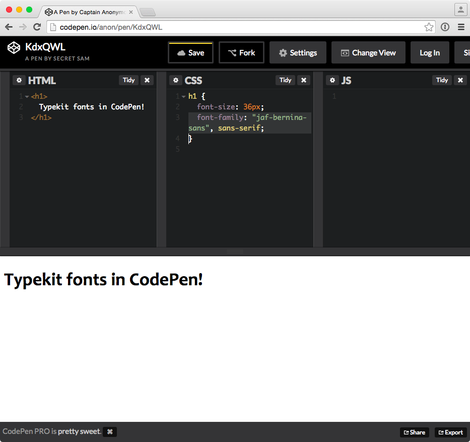
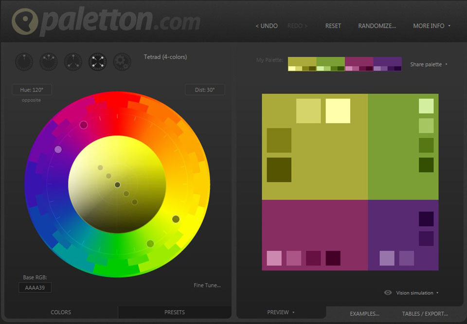

Zone de travailet ressources associer |
|
Ressource HTMLCette section comporte les ressources importantes en rapport a la creation de page HTML
Mozilla met en place une documentation tres detailler de toute les technologies du net telle que HTML/CSS ou encore javascript.Ces ressources sont tres completes et presque entierement traduite en francais ce qui en fait un atout de taille pour tout devellopeur lien: MDN Web Doc le lien sera en permanence dans le menu a gauche Personellement le meilleur des IDE en ligne estcodepen.io Son principal avantage est de possedé un environnement tres simple de comprehension avec cest trois boite de codage pour HTML ,CSS , Javascript et une partie inferieure qui fait le rendu en direct Ressource CSSCette section comporte les ressources inportante concernant l'utilisation de CSS
La base de la ressources ce trouve encore une fois sur W3school avec la documentation de du Framework W3.css Tutoriels ou tutoriaux webdesignRessources GraphiqueLes couleurs sont souvent un probleme pour les debutant en effet sans connaisance en design il est difficile de d'armoniser les couleur le site palleton vous propose une pallete de couleur adapter a une couleur de reference de plus il est possible de reccuprer le code Hexadecimal de ces couleur pour les reutilliser facilement Lien: Paletton Les liens ci-dessous liste certain site qui regroupe des template soit gratuit soit payantLes templates sont un bon moyen de concevoir des pages internet avec un design professionel sans a avoir a faire les balise CSS nous meme .En effet j'ai deja parler plus haut du framework W3.css, de plus les framework simplifie l'adaptation en responsive des pages crées Tester Vos pagesPour tester la partie CSS de votre site le site du W3C met a dispostion le Validateur CSS |
|